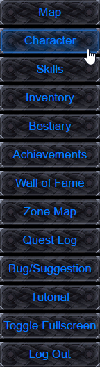
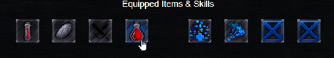

Character Screen

Your character screen can be used as an overview of everything you have going on with your character, from current stats, equipped items, and skills, to attack and armor ratings, as well as elemental resistences

This panel also shows useful information such as what your allocated stats do for you, and how much experence you need to collect before next level.
The last, and most importent thing you can do here is allocate stats earned from leveling up by clicking the blue buttons beside each stat. NOTE: Once a stat point is allocated, it can never be taken back and reallocated.